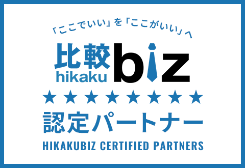

2018年設立
継続して日本国内の事業者向けに開発支援を行っています。
LINE Business OS
LINE Business OSは、LINEに散らばる勤務希望・予約連絡・報告を整理し、店長やオーナーの確認作業を減らす業務支援プラットフォームです。
カフェ・レストラン・サロン・クリニックなどの小規模事業者向けに、スタッフ管理や予約対応をLINEで使いやすい形に整えます。
信頼の背景
IZUMI IT COMPANYは、Web制作・フロントエンド開発・WordPress構築などを通じて、日本国内の事業者向けに開発支援を行ってきました。その経験をもとに、現在はLINE連携型SaaS「LINE Business OS」を開発しています。
継続して日本国内の事業者向けに開発支援を行っています。
Web制作・開発領域での支援実績です。
Web制作・開発領域での評価です。
これまでの事業活動における信頼の背景です。

比較ビズの企業紹介ページを見る
店舗運営の課題
確認が遅れる。返信が漏れる。シフト変更や予約内容を探す時間が増える。
その小さな手間が、毎日の店舗運営を重くしています。
解決の考え方
新しいアプリを無理に使わせるのではなく、スタッフやお客様が普段使っているLINEを入口にします。店舗側は管理画面で状況を確認し、スタッフやお客様はLINEから必要な操作を進められます。
業務の流れ
勤務希望 / 勤務報告 / 予約 / キャンセル
シフト / 予約状況 / 報告 / 通知
店長・オーナーの負担を軽くする
運用の変化
おすすめする店舗
専用システムをご検討ください
LINE Business OSは、店舗内の連絡・予約・確認作業を整理するための業務支援サービスです。以下の用途を主目的とする場合は、専用システムの利用をご検討ください。
サービス
LINE BUSINESS OS
カフェ・レストラン向けスタッフ管理
LINEに散らばる勤務希望・報告・修正依頼を整理し、店長の確認作業を減らします。シフト共有、勤務報告、レシピ・マニュアル共有まで、店舗内のスタッフ運用をLINEで確認しやすくします。
Workforceを見る →LINE BUSINESS OS
サロン・クリニック向けLINE予約
LINE上で24時間予約を受け付け、電話・DMでの確認作業を減らします。予約確認・キャンセル導線を整理し、自動リマインドで来店忘れリスクを軽減しやすくします。
Bookingを見る →個別対応
各事業の業務フローに合わせたLINE連携・業務自動化
標準サービスだけでは対応しきれない業務について、事業内容や現場の流れに合わせて、LINE連携・管理画面・通知フローを個別に設計します。
個別相談する →Workforce
店長が毎回LINEを探し直さなくても、勤務希望・報告・修正依頼を確認できる状態にします。
LINE Business OS Workforceは、カフェ・レストランなどの店舗向けスタッフ管理システムです。スタッフの勤務希望、シフト共有、勤務報告、勤務時間の修正依頼、レシピ・マニュアル共有を、LINEで確認しやすい形に整理します。
本サービスは、給与計算・法定勤怠管理・税務・労務管理を目的としたシステムではありません。
Booking
LINE上で24時間予約を受け付け、営業時間外の予約にも対応しやすい導線を整えます。
LINE Business OS Bookingは、サロン・美容室・バーバー・クリニック向けのLINE予約システムです。予約確認・キャンセル導線をLINE上に整理し、連絡漏れや誤操作を減らしやすくします。自動リマインド通知により、お客様の来店忘れリスクも軽減しやすくします。
操作イメージ
LINEから入力し、店舗側は管理画面で状況を確認できます。導入前に、LINEでの操作と管理画面での確認イメージをご確認いただけます。
LINE側 ・ スタッフ / お客様
Workforce スタッフ画面
Booking お客様画面
管理画面 ・ 店舗側
Workforce 管理者画面
Booking 店舗側管理
画面は説明用のイメージです。実際の導入内容は店舗ごとに確認します。
LINEを使う理由
新しいアプリのインストールや複雑な操作を増やすと、現場に定着しにくくなります。LINE Business OSは、スタッフやお客様が使い慣れているLINEを入口にすることで、小規模店舗でも導入しやすい業務フローを目指しています。
LINE 業務システムとして、店舗側の管理と現場の操作をつなぎます。小規模店舗 DXを、無理なく始められる形へ。
STARTING FROM
税別。個別対応・複数店舗はお見積りとなります。
Trust
IZUMI IT COMPANYは、2018年設立。日本国内のクライアント向けに、Web制作・フロントエンド開発・WordPress構築などを行ってきました。これまでの制作実績と開発経験をもとに、現在は小規模店舗向けのLINE連携型SaaS「LINE Business OS」を開発しています。
会社について →Security
店舗ごとのデータ分離、アクセス権限の管理、必要最小限の運用アクセスなど、セキュリティを重視して設計しています。正式導入前に、運用内容・管理範囲・サポート範囲を確認します。
セキュリティを見る →導入前の確認
正式導入の前に、現在の運用・スタッフ数・予約フローを確認し、自店舗で使える形かどうかをご相談いただけます。小規模店舗の実際の声をもとに、導入しやすい形へ改善を続けています。
デモ・導入相談をする開発協力店舗様のご相談も受け付けています。
導入ステップ
はじめての導入でも、現在の運用を確認しながら、必要なサービスだけを小さく始められます。
現在の店舗運用、スタッフ数、予約フロー、LINE公式アカウントの有無を確認します。
勤務希望、予約受付、通知、確認作業など、今どこで手間が発生しているかを整理します。
Workforce、Booking、Custom Automationの中から、必要なサービスだけを選びます。
画面イメージ、導入範囲、料金、サポート範囲を確認します。
小さく始めて、実際の運用に合うか確認しながら調整します。
運用開始後も、必要に応じて使い方や改善点を確認します。
正式な料金・契約条件は、個別のお見積りおよび利用規約をご確認いただきます。
よくあるご質問
はい。カフェ、レストラン、サロン、クリニックなど、少人数で運営している店舗でも使いやすい設計を目指しています。
運用内容によって必要になる場合があります。LINE公式アカウントの利用料金は、プランやメッセージ配信数により別途発生する場合があります。
いいえ。それぞれ独立したサービスです。必要なサービスだけを選んで導入できます。
本サービスは、給与計算・法定勤怠管理・税務・労務管理を目的としたシステムではありません。店舗内のシフト共有、勤務報告、スタッフ連絡を整理するための業務支援サービスです。
はい。正式導入前に、運用内容・料金・サポート範囲を確認し、自店舗に合う形をご相談いただけます。
内容によって対応可能です。個別カスタマイズが必要な場合は、別途お見積りとなります。
お客様がサービスに登録するスタッフ情報・顧客情報については、お客様の責任で適切な同意取得、入力内容の確認、利用権限の管理を行っていただきます。当社は、サービス提供・保守・サポート・セキュリティ対応に必要な範囲で、利用規約およびプライバシーポリシーに基づきデータを取り扱います。
導入相談
まずは現在の運用をお聞かせください。店舗に合うサービスと導入方法をご提案します。